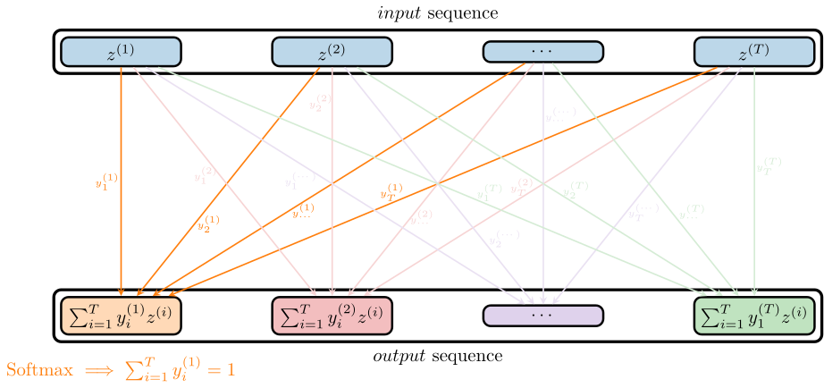
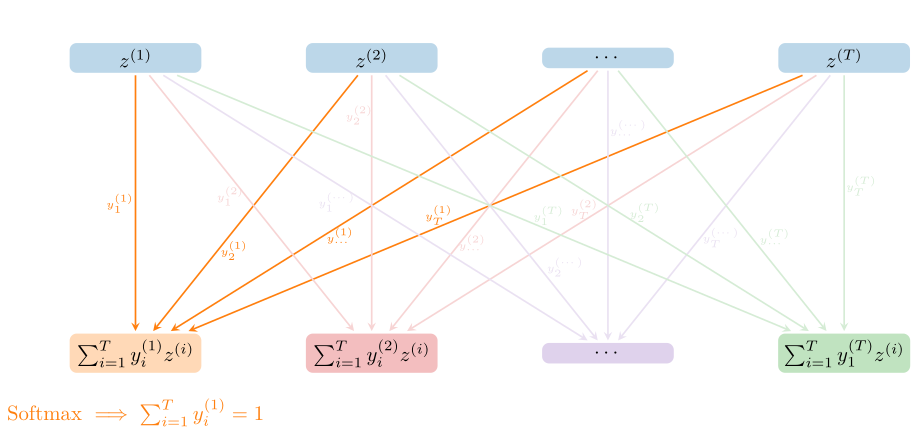
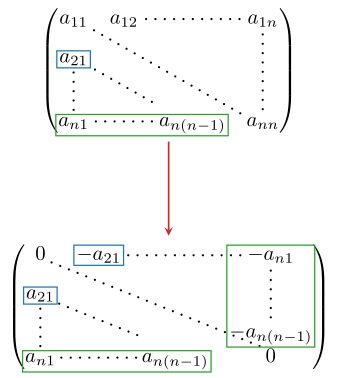

The Attention Layer
The attention mechanism was originally developed for image recognition and natural language processing (NLP) tasks. It is motivated by the need to handle time series data in an efficient way[1]. Its essential idea is to compute correlations between vectors in input sequences. So given two sequences
\[(z_q^{(1)}, z_q^{(2)}, \ldots, z_q^{(T)}) \text{ and } (z_k^{(1)}, z_k^{(2)}, \ldots, z_k^{(T)}),\]
an attention mechanism computes pair-wise correlations between all combinations of two input vectors from these sequences. In [53] "additive" attention is used to compute such correlations:
\[(z_q, z_k) \mapsto v^T\sigma(Wz_q + Uz_k), \]
where $z_q, z_k \in \mathbb{R}^d$ are elements of the input sequences. The learnable parameters are $W, U \in \mathbb{R}^{n\times{}d}$ and $v \in \mathbb{R}^n$.
However multiplicative attention [54] is more straightforward to interpret and cheaper to handle computationally:
\[(z_q, z_k) \mapsto z_q^TWz_k,\]
where $W \in \mathbb{R}^{d\times{}d}$ is a learnable weight matrix with respect to which correlations are computed as scalar products. Regardless of the type of attention used, they all compute correlations among input sequences on whose basis further computation is performed. Given two input sequences $Z_q = (z_q^{(1)}, \ldots, z_q^{(T)})$ and $Z_k = (z_k^{(1)}, \ldots, z_k^{(T)})$, we can arrange the various correlations into a correlation matrix $C\in\mathbb{R}^{T\times{}T}$ with entries $[C]_{ij} = \mathtt{attention}(z_q^{(i)}, z_k^{(j)}),$ where the attention may be additive or multiplicative. In the case of multiplicative attention this matrix is just $C = Z_q^TWZ_k$.
The notation with designating different vectors with a $q$ and $k$ label comes from natural language processing. These labels stand for queries and keys.
In the section on multihead attention this will be explained further.
Reweighting of the Input Sequence
In GeometricMachineLearning we always compute self-attention, meaning that the two input sequences $Z_q$ and $Z_k$ are the same, i.e. $Z = Z_q = Z_k$.[2]
These correlations are then used to reweight the columns in the input sequence $Z$. For this we first apply a nonlinearity $\sigma$ onto $C$ and then multiply $\sigma(C)$ onto $Z$ from the right, i.e. the output of the attention layer is $Z\sigma(C)$. So we perform the following mappings:
\[Z \xrightarrow{\mathrm{correlations}} C(Z) =: C \xrightarrow{\sigma} \sigma(C) \xrightarrow{\text{right multiplication}} Z \sigma(C).\]
After the right multiplication the outputs is of the following form:
\[ [\sum_{i=1}^Tp^{(1)}_iz^{(i)}, \ldots, \sum_{i=1}^Tp^{(T)}_iz^{(i)}],\]
for $p^{(i)} = [\sigma(C)]_{\bullet{}i}$. What is learned during training are $T$ different linear combinations of the input vectors, where the coefficients $p^{(i)}_j$ in these linear combinations depend on the input $Z$ nonlinearly.
Volume-Preserving Attention
The VolumePreservingAttention layer (and the activation function $\sigma$ defined for it) in GeometricMachineLearning was specifically designed to apply it to data coming from physical systems that can be described through a divergence-free or a symplectic vector field. Traditionally the nonlinearity in the attention mechanism is a softmax[3] [54] and the self-attention layer performs the following mapping:
\[Z := [z^{(1)}, \ldots, z^{(T)}] \mapsto Z\mathrm{softmax}(Z^TWZ).\]
The softmax activation acts vector-wise, i.e. if we supply it with a matrix $C$ as input it returns:
\[\mathrm{softmax}(C) = [\mathrm{softmax}(c_{\bullet{}1}), \ldots, \mathrm{softmax}(c_{\bullet{}T})].\]
The output of a softmax is a probability vector (also called stochastic vector) and the matrix $Y = [y^{(1)}, \ldots, y^{(T)}]$, where each column is a probability vector, is sometimes referred to as a "stochastic matrix" [55]. This attention mechanism finds application in transformer neural networks [54]. The problem with this matrix from a geometric point of view is that all the columns are independent of each other and the nonlinear transformation could in theory produce a stochastic matrix for which all columns are identical and thus lead to a loss of information. So the softmax activation function is inherently non-geometric. We visualize this with the figure below:


So the $y$ coefficients responsible for producing the first output vector are independent from those producing the second output vector etc., they have the condition $\sum_{i=1}^Ty^{(j)}_iz_\mu^{(i)}$ for each column $j$ imposed on them, but the coefficients for two different columns are independent of each other.
We said that the coefficients are independent of each other, which means that in theory, they could be the same or ill-conditioned, i.e. we could have
\[\mathrm{det}(\mathrm{softmax}(C)) \approx 0.\]
With volume-preserving attention we make the coefficients dependent of each other, such that the columns of $\sigma(C)$ are independent of each other:
\[\sigma(C)^T\sigma(C) = \mathbb{I},\]
which further implies $\mathrm{det}(\sigma(C)) = 1$.
Besides the traditional attention mechanism GeometricMachineLearning therefore also has a volume-preserving transformation that fulfills a similar role, but imposes additional structure on the $y$ coefficients. There are two approaches implemented to realize this volume-preserving transformation. Both of them however utilize the Cayley transform to produce orthogonal matrices instead of stochastic matrices. For an orthogonal matrix $\Sigma$ we have $\Sigma^T\Sigma = \mathbb{I}$, so all the columns are linearly independent, which is not necessarily true for a stochastic matrix $P$. In the following we explain how this new activation function is implemented. First we need to briefly discuss the Cayley transform.
The Cayley Transform
The Cayley transform maps from skew-symmetric matrices to orthonormal matrices. It takes the form[4]:
\[\mathrm{Cayley}: A \mapsto (\mathbb{I} - A)(\mathbb{I} + A)^{-1}.\]
Analogously to when we used the Cayley transform as a retraction, we can easily check that $\mathrm{Cayley}(A)$ is orthogonal if $A$ is skew-symmetric. For this consider $\varepsilon \mapsto A(\varepsilon)\in\mathcal{S}_\mathrm{skew}$ with $A(0) = \mathbb{O}$ and $A'(0) = B \neq \mathbb{O}$. Then we have:
\[\frac{\delta(\mathrm{Cayley}(A)^T\mathrm{Cayley}(A))}{\delta{}A} = \frac{d}{d\varepsilon}|_{\varepsilon=0} \mathrm{Cayley}(A(\varepsilon))^T \mathrm{Cayley}(A(\varepsilon)) = A'(0)^T + A'(0) = \mathbb{O},\]
So $\mathrm{Cayley}(A)^T\mathrm{Cayley}(A)$ remains unchanged among $\varepsilon$. In order to use the Cayley transform as an activation function we further need a mapping from the input $Z$ to a skew-symmetric matrix. This is realized in two ways in GeometricMachineLearning: via a scalar-product with a skew-symmetric weighting and via a scalar-product with an arbitrary weighting.
First approach: scalar products with a skew-symmetric weighting
For this the attention layer is modified in the following way:
\[Z := [z^{(1)}, \ldots, z^{(T)}] \mapsto Z\sigma(Z^TAZ),\]
where $\sigma(C)=\mathrm{Cayley}(C)$ and $A$ is a matrix of type SkewSymMatrix that is learnable, i.e. the parameters of the attention layer are stored in $A$.
Second approach: scalar products with an arbitrary weighting
For this approach we compute correlations between the input vectors based on scalar product with an arbitrary weighting. This arbitrary $T\times{}T$ matrix $A$ constitutes the learnable parameters of the attention layer. The correlations we consider here are based on:
\[(z^{(2)})^TAz^{(1)}, (z^{(3)})^TAz^{(1)}, \ldots, (z^{(d)})^TAz^{(1)}, (z^{(3)})^TAz^{(2)}, \ldots, (z^{(d)})^TAz^{(2)}, \ldots, (z^{(d)})^TAz^{(d-1)}.\]
So we consider correlations $(z^{(i)})^Tz^{(j)}$ for which $i > j$. We now arrange these correlations into a skew-symmetric matrix:
\[C = \begin{bmatrix} 0 & -(z^{(2)})^TAz^{(1)} & -(z^{(3)})^TAz^{(1)} & \ldots & -(z^{(d)})^TAz^{(1)} \\ (z^{(2)})^TAz^{(1)} & 0 & -(z^{(3)})^TAz^{(2)} & \ldots & -(z^{(d)})^TAz^{(2)} \\ \ldots & \ldots & \ldots & \ldots & \ldots \\ (z^{(d)})^TAz^{(1)} & (z^{(d)})^TAz^{(2)} & (z^{(d)})^TAz^{(3)} & \ldots & 0 \end{bmatrix}.\]
This correlation matrix can now again be used as an input for the Cayley transform to produce an orthogonal matrix. Mathematically this is also equivalent to first computing all correlations $Z^TAZ$ and then mapping the lower triangular to the upper triangular and negating these elements. This is visualized below:


Internally GeometricMachineLearning computes this more efficiently with the function GeometricMachineLearning.tensor_mat_skew_sym_assign. We show a comparison of the two approaches in the examples section.
How is Structure Preserved?
To discuss structure preservation, we must first define the notion of volume on the space of input matrices. A mapping $f: \mathbb{R}^{d \times T} \to \mathbb{R}^{d \times T}$ is said to be volume-preserving if the determinant of its Jacobian operator $Df(Z)$ is $\pm 1$.
We focus on the first approach, where the map is defined as:
\[f(Z) = Z \cdot \sigma(Z^T A Z),\]
with $\sigma(C) = (\mathbb{I} - C)(\mathbb{I} + C)^{-1}$. Here $Z$ is a rectangular matrix of full row rank $d$ (with $T \geq d$).
The volume-preserving property is proved by analyzing the geometry of the tangent space $T_Z \mathbb{R}^{d \times T} = \mathbb{R}^{d\times{}T}$. We decompose any tangent vector into two orthogonal components: a vertical component and a horizontal component. The vertical component is the kernel of the tangent map of $\pi:\mathbb{R}^{d\times{}T}\to\mathfrak{so}(T), Z\mapsto Z^TAZ$ and the horizontal component is its orthogonal complement (with respect to the canonical metric).
In this context it is important to mention that the fibers defined by $\pi$, i.e. $\mathcal{F}_C := \pi^{-1}\{C\}$, are preserved under $f$, i.e. for $Z\in\mathcal{F}_C$ we have:
\[\pi\circ{}f(Z) = \sigma(C)^TZ^TAZ\sigma(C) = \sigma(C)^TC\sigma(C) = C\]
and hence $f(Z) \in \mathcal{F}_C$. Note that $\sigma(C)$ commutes with $C$ because the former is a rational function of the latter.
We now split the proof of volume preservation into three parts: one for the fiber directions, one for the base directions and one that puts everything together. We also note that we follow [56] for this proof.
1. Vertical Space (Fiber Directions)
The vertical subspace $V_Z$ consists of directions that do not change the correlation matrix $C = Z^T A Z$, i.e. $V_Z = T_Z\mathcal{F}_C$. A vector $v\in{}V_Z$ must satisfy the following:
\[V_Z = \{ v\in\mathbb{R}^{d\times{}T} : Z^TAv + v^TAZ = 0 \}.\]
We now compute the dimension of $V_Z$. For this consider the linear map $\mathcal{L}(v) = \text{Skew}(Z^T A v)$. The vertical space corresponds to the kernel of $\mathcal{L}$. Because the sum of the dimension of the image and the kernel give the total space, we have: $\dim(V_Z) = dT - \dim(\text{Im}(\mathcal{L}))$. Assuming that $AZ$ has rank $d$ we can find a transformation[5] $AZ \mapsto \begin{bmatrix}\mathbb{I} & 0 \end{bmatrix}$ and then write the image under $\mathcal{L}$ as:
\[ \mathcal{L}(v) = \begin{bmatrix} v_1^T \\ v_2^T \end{bmatrix}\begin{bmatrix}\mathbb{I} & 0 \end{bmatrix} - \begin{bmatrix}\mathbb{I} \\ 0 \end{bmatrix} \begin{bmatrix} v_1 & v_2 \end{bmatrix} = \begin{bmatrix} v_1^T - v_1 & - v_2 \\ v_2^T & 0 \end{bmatrix},\]
where $v = [v_1, v_2]$ with $v_1 \in \mathbb{R}^{d \times d}$ and $v_2 \in \mathbb{R}^{d \times (T-d)}$. Dimension counting then yields $\dim(\text{Im}(\mathcal{L})) = d(d-1)/2 + d(T-d)$ and subsequently:
\[ \dim(V_Z) = dT - \left( dT - \frac{d(d+1)}{2} \right) = \frac{d(d+1)}{2}.\]
We note the similarity in the argumentation for proving the dimensionality of the image of $\mathcal{L}$ and that of the Stiefel manifold $St(d, T)$.
We also note that the map $f$ acts on a vertical vector $v \in V_Z$ simply by rotating it:
\[T_Zf(v) = v \cdot \sigma(C).\]
Since $\sigma(C)$ is an orthogonal matrix, this rotation has a determinant of 1. This is further outlined below.
2. Horizontal Space (Base Directions)
The horizontal subspace $H_Z$ consists of directions orthogonal to $V_Z$. These directions are responsible for changing the correlation matrix $C$.
$H_Z$ is generated by applying the Lie algebra of skew-symmetric matrices onto $AZ$ from the right:
\[H_Z = \{ A Z \Lambda : \Lambda \in \mathbb{R}^{T \times T}, \Lambda^T = -\Lambda \}.\]
We show that $H_Z$ is orthogonal to $V_Z$. For $h\in{}H_Z$ we have $h = AZ\Lambda$ and further
\[ \mathrm{Tr}(v^Th) = \mathrm{Tr}(v^TAZ\Lambda) = \mathrm{Tr}(\Lambda^T(v^TAZ)^T) = -\mathrm{Tr}(\Lambda(v^TAZ)) = -\mathrm{Tr}((v^TAZ)\Lambda) = 0,\]
by the properties of the trace and the symmetry of $v^TAZ$. In order to prove that we have an orthogonal decomposition $\mathbb{R}^{d\times{}T} = V_Z\oplus{}H_Z$ we further have to show that the dimension of $H_Z$ is $d(d-1)/2 + d(T-d)$.
We remark the analogies to the geometry of the Stiefel manifold. The horizontal component $H_Z$ is almost equivalent to the tangent space to the Stiefel manifold $T_YSt(d, T)$ (bar a matrix transpose), where $Y\in{}St(d, T)$ is an orthogonal matrix that spans the same space as $Z^T$.
We focus on the case $T > d$, for which the map $L_Z: \Lambda \mapsto A Z \Lambda$ is not injective. Its kernel is:
\[\ker(L_Z) = \{ \Lambda \in \mathfrak{so}(T) : Z \Lambda = 0 \}.\]
In a basis where $Z = \begin{bmatrix}\mathbb{I}_d & 0\end{bmatrix}$, the kernel again consists of skew-symmetric matrices supported on the null space of $Z$ (the bottom-right $(T-d) \times (T-d)$ block[6]). The dimension of the horizontal space is:
\[\dim(H_Z) = \dim(\mathfrak{so}(T)) - \dim(\mathfrak{so}(T-d)) = \frac{T(T-1)}{2} - \frac{(T-d)(T-d-1)}{2}\]
Simplifying yields $\dim(H_Z) = dT - \frac{d(d+1)}{2}$. Summing dimensions: $\dim(V_Z) + \dim(H_Z) = dT$. The decomposition is valid.
We further decompose the action of $f$ on a horizontal vector $h = AZ\Lambda \in H_Z$ into vertical and horizontal component:
\[ T_{f(Z)} \pi ( T_Z f(h) ) = T_Z(\pi \circ f)h = T_Z \pi(h).\]
This implies that the horizontal component of the output is generated by the same effective parameter $\Lambda$:
\[T_Z f(A Z \Lambda) \simeq A Z' \Lambda + \mathcal{V}_\mathrm{ver}\]
where $Z' = Z\sigma$. The term $\mathcal{V}_\mathrm{ver}$ refers to the vertical component of $T_Zf(h)$ in $V_{f(Z)}$ which is not needed for proving that $f$ is volume-preserving.
3. The Jacobian Determinant
When represented in a coordinate system aligned with this Vertical/Horizontal decomposition, the Jacobian matrix $J$ of $f$ has a block lower-triangular structure:
\[J = \begin{pmatrix} J_{HH} & 0 \\ J_{VH} & J_{VV} \end{pmatrix}.\]
- The top-right block is $0$ because moving along a vertical direction (fiber) does not change the horizontal coordinate (base).
- The bottom-right block $J_{VV}$ represents the rotation $v \mapsto v\alpha$. Its determinant is 1.
- The top-left block $J_{HH}$ represents the identity map on the effective parameters of the horizontal space. Its determinant is 1.
Consequently, the total determinant is $\det(Df) = \det(J_{HH}) \cdot \det(J_{VV}) = 1 \cdot 1 = 1$. This rigorous decomposition confirms that the layer preserves the volume of the input data.
Historical Note
Attention was used before the transformer was introduced, but mostly in connection with recurrent neural networks see [53, 57].
Library Functions
GeometricMachineLearning.tensor_mat_skew_sym_assign — Function
tensor_mat_skew_sym_assign(Z::AbstractArray{<:Number, 3}, A::AbstractMatrix)Compute scalar products of columns of $Z$ along the second axis.
The scalar products are weighted by $A$.
Scalar products are computed for any two vectors of the form Z[:, i, k] and Z[:, j, k], i.e.
\[ (z^{(i)}, z^{(j)}) \mapsto (z^{(i)})^TAz^{(j)} \text{ for } i > j.\]
The result of this are $n(n-2)\div2$ scalar products for each index k from the third axis.
These scalar products are written into a lower-triangular matrix and the final output of the function is a tensor of these lower-triangular matrices.
This is used in VolumePreservingAttention when skew_sym is set to false.
Examples
Here we consider a weighting
\[A = \begin{pmatrix} 1 & 0 & 0 \\ 0 & 2 & 0 \\ 0 & 0 & 3\end{pmatrix}\]
and three sequences:
\[Z_1 = \begin{pmatrix} 1 & 1 \\ 0 & 1 \\ 0 & 1 \end{pmatrix},\quad Z_2 = \begin{pmatrix} 0 & 1 \\ 1 & 1 \\ 0 & 1 \end{pmatrix}, \quad Z_3 = \begin{pmatrix} 0 & 1 \\ 0 & 1 \\ 1 & 1 \end{pmatrix}.\]
The result of applying tensor_mat_skew_sym_assign is a tensor $\in\mathbb{R}^{2\times2\times3}:$
using GeometricMachineLearning: tensor_mat_skew_sym_assign
A = [1 0 0; 0 2 0; 0 0 3]
Z = [1; 0; 0;; 1; 1; 1;;; 0; 1; 0;; 1; 1; 1;;; 0; 0; 1;; 1; 1; 1]
tensor_mat_skew_sym_assign(Z, A)
# output
2×2×3 Array{Int64, 3}:
[:, :, 1] =
0 0
1 0
[:, :, 2] =
0 0
2 0
[:, :, 3] =
0 0
3 0GeometricMachineLearning.VolumePreservingAttention — Type
VolumePreservingAttention(dim, seq_length)Make an instance of VolumePreservingAttention for a specific dimension and sequence length.
The sequence length is 0 by default.
Setting seq_length to 0 for all sequence lengths but does not apply the fast Cayley activation.
Arguments
The constructor can be called with an optional keyword argument:
skew_sym::Bool = false: specifies if the weight matrix is skew symmetric (true) or arbitrary (false).
Functor
Applying a layer of type VolumePreservingAttention does the following:
- First we perform the operation $Z \mapsto Z^T A Z =: C$, where $Z\in\mathbb{R}^{N\times\mathtt{seq\_length}}$ is a vector containing time series data and $A$ is the skew symmetric matrix associated with the layer (if
skew_sym = true). - In a second step we compute the Cayley transform of $C$; $\Lambda = \mathrm{Cayley}(C)$.
- The output of the layer is then $Z\Lambda$.
Implementation
The fast activation is only implemented for sequence lengths of 2, 3, 4 and 5. Other sequence lengths only work on CPU (for now).
The fast Cayley activation is using inverses that have been computed symbolically.
References
- [53]
- D. Bahdanau, K. Cho and Y. Bengio. Neural machine translation by jointly learning to align and translate, arXiv preprint arXiv:1409.0473 (2014).
- [57]
- M.-T. Luong, H. Pham and C. D. Manning. Effective approaches to attention-based neural machine translation, arXiv preprint arXiv:1508.04025 (2015).
- 1Recurrent neural networks [52] have the same motivation. The have however been replaced by transformers, of which attention is the most important component, in many applications.
- 2Multihead attention also falls into this category. Here the input $Z$ is multiplied from the left with several projection matrices $P^Q_i$ and $P^K_i$, where $i$ indicates the head. For each head we then compute a correlation matrix $(P^Q_i Z)^T(P^K Z)$.
- 3The softmax acts on the matrix $C$ in a vector-wise manner, i.e. it operates on each column of the input matrix $C = [\mathrm{softmax}(c_{\bullet{}1}), \ldots, \mathrm{softmax}(c_{\bullet{}T})] \equiv [c^{(1)}, \ldots, c^{(T)}]$. The result is a sequence of probability vectors $[y^{(1)}, \ldots, y^{(T)}] = [\mathrm{softmax}(y^{(1)}), \ldots, \mathrm{softmax}(y^{(T)})]$ for which $\sum_{i=1}^Ty^{(j)}_i=1\quad\forall{}j\in\{1,\dots,T\}.$
- 4The Cayley transform here does not have the factor $1/2$ hat we used when talking about the Cayley retraction. This is because now we do not need the retraction property $d/dt\mathrm{Cayley}(tV)|_{t=0} = V$, but only a map $\mathfrak{g}\to{}G=SO(N).$
- 5This transformation could be absorbed into $v$.
- 6See the application of $\mathcal{L}$ onto $V_Z$ outlined above.